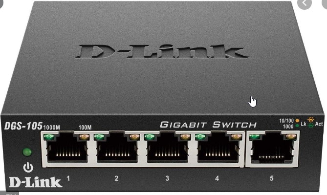

HUB

>Its a non intelligent device.(It takes input from one port and broadcast it to other ports)
>It has only 1 Collision domain (if 2 devices are communicating and a 3rd device tries to coomunicate then the whole data corrupts & all the devices has to retransmit the data)
>It has only 1 Broadcast domain (when a broadcast is received in one port it will be bradcasted/sent to other ports)
Bridge
>Its slightly more intelligent than HUB but not as intelligent as switch
> A bridge operates at data link layer. A bridge is a repeater, with add on the functionality of filtering content by reading the MAC addressesof source and destination.
Switch

>Its an intelligentdevice(It can store the mac Address information)
>It can switch/channel the data on the basis of mac address
>Many Collision Domains(devices can exchange information simultaneously without colliding)
>1 Broadcast Domain (1--------->23 ports).. Assuming VLAN is not configured
>All ports connected to same network
Router

>Its a very intelligent device.(It takes input from one port and broadcast it to other ports)
>It has manyCollision domain (if 2 devices are communicating and a 3rd device tries to coomunicate then the whole data corrupts & all the devices has to retransmit the data)
>It has manyBroadcast domain (when gets a broadcast at any input itdrops it)
>Always used as border device(When we need to connect to outer network we pass it to gateway(router here))
>All its ports are connected to different network